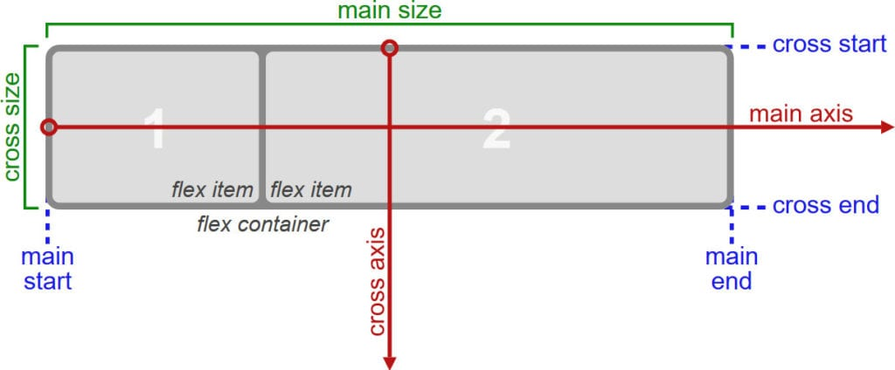
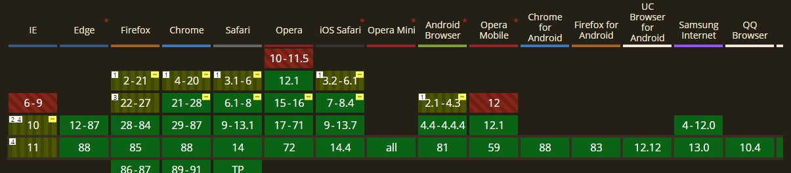

Flexbox es una forma de acomodar, alinear, distribuir, entre otros. Unos elementos dentro de un contenedor. Esto nos ayuda a que nuestra pagina web sea muchisimo mejor estructurada, organizada y un factor importante muy importante, ayuda a nuestra pagina web a ser Responsive Flexbox es muy buena comparada a otros tipos de layouts, como la propiedad float. Flexbox te permite que los elementos de un contenedor se mantegan organizados en diferentes cambios que tenga la pagina web, ya sea usando JS, CSS, o haciendo zoom en la pagina web.
¿Como Funciona Flexbox?
Flexbox es un modulo de CSS que contiene algunas propiedades Que pueden ser usadas en los containers o como serán llamados al usar Flexbox, Flex-Containers O en los elementos de estos containers, los Flex-itemss
Un Ejemplo de los Flex-Container y sus Flex-items:
Flex-Container
Flex-items
Flex-items
Flex-items
Para que todas estas acciones se puedan lograr, Flexbox usa un sistema de UnderLying o conocido como The UnderLying Concept Como se habia explicado antes, Flexbox es un modulo de CSS. Por lo tanto, Flexbox va a tener varios operadores Estos nos ayudan a tener varias propiedades para usar Flexbox
los operadores de Underlying son:
-
main axis :
El main axis o eje principal, es como dice, el eje principal del Flex-Container, en este eje los Flex-items son puestos o acomodados. La orientación del main axis, puede ser tanto horizontal (Predeterminado) o vertical esto depende de la propiedad: flex-direction: ; (más adelante explicada)
-
main start | main-end :
El main start y main end o inicio principal y final principal, son el espacio donde van a ir ubicados los Flex-items, dentro del Flex-Container Siendo ubicados desde main start a main end
-
main size :
El main size o tamaño principal, es el width o el height de del Flex-Container, esto depende de que dimensión este el contenedor La dimensión esta determinada por la orientación del Flex-Container & del main axis
(horizontal => width; vetical => height)
-
cross axis :
El cross axis o eje transversal, es el eje pertenticular a el eje del main axis Por ende, su orientación esta determinada por la propiedad: flex-direction (más adelante explicada)
-
cross-start | cross-end :
El cross-start y cross-end o inicio transversal y final-transversal, el espacio donde van a ir diferentes Flex-Lines Las Flex-Lines, son espacios donde van a ir alineados e organizados los Flex-items en el Flex-Container
-
cross-size :
El cross-size o tamaño transversal, es el width o el height de el Flex-Container, esto depende de que dimensión este el contenedor La dimensión esta determinada por la orientación del Flex-Container & del cross axis
(horizontal => height; vertical => width)

"The UnderLying Concept" Concepto Hecho por la Organización World Wide Web Consortium (W3C)
"The UnderLying Concept" Concepto Hecho por la Organización World Wide Web Consortium (W3C)
¿Por qué Usar Flexbox
Como ya hemos visto, FlexBox es una gran herramienta que podemos usar para diseñar nuetras páginas web
Ya que con Flexbox, usando los Flex-Containers, podemos manipular en diseño, tamaño, espaciado entre elementos y sus ejes verticales e horizontales Esto nos da la ventaja de que los Flex-items dentro del Flex-Container se mantegan organizados y espaciados dependiendo de los diferentes cambios que tenga la página web, como agrandar o minimizar usando el zoom del navegador
El que la página web pueda responder a todos estos cambios, se le reconoce como una página Responsive Una cualidad necesitada, para que la página web pueda ser usada por muchos usuarios con dispositivos y pantallas muy diferentes. Aún que Flexbox no convierte totalmente tu página web a Responsive, Flexbox ayudara mucho en este proceso.
Pero esto no es lo unico que Flexbox puede lograr, tambien con su modulo podemos crear diferentes styles que antes eran muy dificiles de hacer
-
Centrar elementos :
Antes con CSS no podiamos hacer de una forma muy sencilla que nuestros elementos queden centrados tanto veticalmente como algunas veces horizontalmente Pero con Flexbox, tenemos que usar 1 o 2 propiedades para que nuestros Flex-items queden perfectamente organizados
Ejemplo de centrar usando Flexbox:
CSS
.flexContainer {
/* Styles del contenedor */
/* Flex Properties */
display: flex;
justify-content: center; /* Alinear en el centro del "main axis" */
align-items: center; /* Alinear en el centro del "cross axis" */
}
.flexContainer .flexItems {
/* Styles del Objeto */
}
-
Alinear Inline-Elements :
Con Flexbox podemos organizar de una forma muy sencilla cualquier Inline-Element Sin Flexbox y solo CSS tendriamos que usar más propiedades y más complejas Por ende podemos usar Flexbox para diferentes objetos que usen Inline Elements, como los Navs, Buttons, entre otros. Pero lo mejor de todo esto, es que a no ser que necesitemos una organización especifica solo debemos usar el: display: flex;
Ejemplo al organizar perfectamente 5 Inline-Elements en un Flex-Container:
CSS
.flexContainer {
/* Styles del Contenedor */
/* Flex Properties */
display: flex; /* Usamos en el Contenedor Flexbox
align-items: center /* Centramos los Elements en el Cross Axis */ (Opcional)
}
.flexContainer .flexItem {
/* Styles de los Elementos */
width: 20%; /* Ancho exacto de los elementos */
display: inline;
} -
Espaciar Elementos Correctamente :
Otro gran problema a el momento de hacer una pagina web, es el dar correctos espaciados a los elementos de un contenedor con Flexbox, podemos darle una solucion muy sencilla a este problema, pero ademas este espaciado se va mantener dependiendo del tamaño del Flex-Container a el momento de agrandar o minimizar la página web. Esto nos va a aportar a la parte Responsive de nuestra página web
Ejemplo de Como espaciar Elementos usando Flexbox
CSS
.flexContainer {
/* Styles del Contenedor */
/* Flex Properties */
display: flex; /* Usamos Flexbox en el Contenedor */
/* Hacemos que los elementos tengan un espacio alrededor */
justify-content: space-around;
/* Lo alineamos con el cross axis */ (Opcional)
align-items: center;
}
.flexContainer .flexItems {
/* Styles del Elemento */
}
Se pueden usar diferentes espaciados para los Flex-Items
Estos pueden ser, espaciados en todo el Flex-Container. space-between
Espaciados con un poco de espacio entre cada uno. space-around (Ejemplo anterior)
Y Espaciados equitativamente por todo el Flex-Container. space-evenly
Aún que he puesto muchos ejemplos, Flexbox tiene muchisimas más funcionalidades, usos, y posibilidades.
Te recomiendo que busques y hagas muchos experimentos con Flexbox
¿Cuando Usar Flexbox?
Aún que Flexbox, por sí solo, se puede usar totalmente para realizar una página web Lo más recomendado, es usar otros modulos de CSS como Grid para maquetar y organizar mejor nuestra página web Pero si se desea y se recomienda, se puede usar tanto Flexbox como Grid para una página web, dando unos resultados increibles y maravillosos
Entonces ¿Como, Donde y Cuando debo usar Flexbox?
Primero creo que deberiamos ver cuando NO debemos usar Flexbox Ya que es una grandiosa herramienta, pero sobre usada o usada donde no deberia, puede resultar en "Curas peores que la Enfermedad"
Un primer claro ejemplo es, que aún que Flexbox sea muy bueno y util al momento de maquetar nuestra página web, lo mayormente recomendado es usar otros modulos, propiedades e Styles de CSS, como por ejemplo Grid o Bootstrap Esto le va a dar una mejor estructura y Style a nuestra página web.
Relacionado a el ejemplo anterior, NUNCA debemos usar un display: flex; en todos los containers o divs de nuestra página web Esto puede dar errores en el Style y depronto una página web menos eficiente Lo mejor es ver si al usar Flexbox en un container, este soluciona, ayuda o mejora el Style del container (Teniendo en cuenta los posibles usos del modulo de Flexbox y el Underlying Concept) Se deberia usar Flexbox en ese container, si no ayuda pero daña o perjudica a el style lo mejor es no usarlo
Otro ejemplo totalmente diferente, es por terminos de compatibilidad Esto es importante, ya que si tu página usa Flexbox o alguna tecnologia nueva como Grid, Bootstrap 4, Varibles en CSS Tu página web no va a funcionar en algunos navegadores, esto va a perjudicar a los usuarios que usan navegadores de antaño o que no soportan estas tecnologias, por eso si tu página web tiene mucho trafico de IE8 & IE9, deberias usar propiedades como float o no usar Flexbox y tecnologias nuevas (o talvez usar las insufribles tablas)

"Soporte de Flexbox en diferentes Navegadores" Información dada por Can I Use ___?
"Soporte de Flexbox en diferentes Navegadores" Información dada por Can I Use ___?
Listo ya sabemos cuando NO debemos usar Flexbox ahora miremos cuando debemos tener un buen uso de Flexbox
-
Escalado de Items con Flexbox :
Cuando necesitamos que los items de un Container se escalen a el tamaño de este, podemos usar Flexbox para cumplir con esta acción de una forma muy sencilla, solo usando el display: flex;
-
Centrado Vertical & Horizontal con Flexbox :
Cuando necesitemos centrar unos objetos en un container, se puede usar de una forma sencilla Flexbox Y no nos tenemos que complicar tanto con el centrado vertical
-
Organizacion de Items con Flexbox :
Podemos usar diferentes propiedades de Flexbox para que los items de un container se organicen en varias formas, en diferentes columnas, filas y otros
Estos son ejemplos de usos de Funciones, pero ahora estos son unos ejemplos de elementos o partes de la página web
-
Navigation Menus :
Como ya sabemos un Nav son muy importantes en las páginas web, ya que estos nos pueden llevar a todo el sitio web Entonces al ser un container con varios links y elementos inline, debemos darle un Style eficiente y bueno con Flexbox
-
Diseños de cartas o Pequeña informacion :
Un buen uso de Flexbox, se puede dar en diseños de los asides o informacion que esta separada del contenido principal
-
Formuarios en Páginas web :
Al contenter varios inputs, es muy importante tener organizados y con un buen Style para el usuario Por eso en estos formularios es una buena idea usar Flexbox
Cuidado ! ! !
Si se necesita usar Flexbox en una situacion no mencionada anteriormente, piense si el aplicarlo ayudaria más que no aplicarlo Si este funciona bien, le recomiendo usar Flexbox en esa situacion.
Propiedades de Flexbox
Como hemos visto y mencionado anteriormente, Flexbox es un modulo de CSS, por lo tanto no consta de una sola propiedad. De hecho Flexbox cuenta con propiedades para el Flex-Container como para los Flex-Items. Dandole varias oportunidades para combinar y hacer un grandioso Stlye.
Entonces despues de haber visto casí toda la teoria de Flexbox, vamos a ver las propiedades de Flexbox, cuales podran usar el maximo del UnderLying Concept, cosa que nos va a ayudar mucho a el momento de usar Flexbox
Cabe aclarar que algunas propiedades no estan disponibles en algunos navegadores, entonces debemos ser cautelosos al momento de usar Flexbox
Como en Flexbox, tenemos propiedades de Flex-Container y de sus Flex-Items, primero vamos a ver que properties tienen los Flex-Containers y depues vamos a ver las properties tienen los Flex-Items
Properties Flex-Container
Como sabemos el Flex-Container, es el contenedor que va a mantener e organizar los Flex-Items, entonces este va a tener propiedades que solo van a modificar el orden & Style de los Flex-Items
Display :
Esta Property, define el Container que vamos a usar para manejar Flexbox, y poder manejar Flexbox tambien en los Items de este Container. Esto nos permite usar todo el modulo de Flexbox en estos elementos, si no tenemos definido que el Container esta usando Flexbox, ningun atributo del modulo va a funcionar
Los valores que puede tener esta property (para usar Flexbox), son:
-
display: flex ;
El Container se convierte en un Flex-Container que respeta las reglas del Box-Model. Como un Div o un elemento block
-
display: inline-flex ;
El Container se convierte en un Flex-Container que respeta (tambien) las reglas del Box-Model. Solo que las respeta como un Elemento inline-block
CSS
.flexContainer {
/* Styles del contenedor */
/* Flex Properties */
display: flex; /* O inline-flex */
justify-content: space-around; /* Alinear en el centro del "main axis" */
align-items: center; /* Alinear en el centro del "cross axis" */
}
.flexContainer .flexItems {
/* Styles del Objeto */
}
Como podemos ver, las unicas diferencias este display: flex; y display: inline-flex; son las mismas diferencias que display: block; y display: inline-block;
flex-direction:
La Property flex-direction, se usa para determinar la dirección del main-axis, del UnderLying Concpet. Esta determina a que dirección se van a desplegar los Flex-Items del Flex-Container, pudiendo hacer una columna o un fila para nuestros Flex-Items.
Generalmente se despliegan horizontalmente de izquierda a derecha los Flex-Items del Flex-Container.
Los posibles valores y sus usos que tiene flex-direction, son :
-
flex-direction : row ;
Los Flex-Items, se desplegaran de Izquierda a Derecha horizontalmente, puede desplegarse de Derecha a Izquierda si tiene la propiedad "rtl"
-
flex-direction : row-reverse ;
Los Flex-Items, se desplegaran de Derecha a Izquiera horizontalmente (alrevez que row), puede desplegarse de Izquierda a Derecha si tiene la propiedad "rtl".
-
flex-direction : column ;
Los Flex-Items, se desplegaran de Arriba a Abajo, en una Columna.
-
flex-direction : column-reverse ;
Los Flex-Items, se desplegaran de Abajo a Arrbia, en una Columna.
CSS
.flexContainer {
/* Styles del contenedor */
/* Flex Properties */
display: flex;
flex-direction: row | row-reverse | column | column-reverse; /* Cambiar la Direccion del "Main-Axis" */
}
.flexContainer .flexItems {
/* Styles del Objeto */
}
flex-warp:
La Property flex-warp, se usa para habilitar que los Flex-Items, puedan acomodarse, organizarce o desplegarse en más de una linea del contenedor. Ya que en defecto, los Flex-Items sino pueden acomodarse en el Flex-Container, ya sea por muchos Flex-Items o por que son muuy grandes. Estos se modificaron su Style, para que se puedan organizar todos en el Flex-Container
Resumido la Property Flex-Direction se usa para que los Flex-Items no se modifiquen para acomodarse todos en un Flex-Container, sino que el Flex-Container se modificara para que los Flex-Items puedan organizarce sin modificar su Style.
El cambio que hace Flex-Direction en el Underlying Concept, es que agrega multiples lineas, donde los Flex-Items pueden ser desplegados. Así dando más espacio para los Flex-Items al agrandar el Flex-Container
Los Posibles valores que puede tener Flex-Direction, son :
-
flex-direction: nowrap ;
Property por defecto. Los Flex-Items solo se desplegaran y se organizaran en una sola linea dentro del Flex-Container, El Flex-Container no va a cambiar su Style, mientras que los Flex-Items si cambiaran su Style
-
flex-direction: wrap ;
Los Flex-Items se desplegaran y se organizaran en 2 o más lineas dentro del Flex-Container, Se organizaran desde el cross-start hasta el cross-end, o alrevez, esto depende del flex-direction o la direccion que tenga el main-axis en el Flex-Container
-
flex-direction: wrap-reverse ;
Los Flex-Items se desplegaran y se organizaran en 2 o más lineas dentro del Flex-Container, Se organizaran desde el cross-end hasta el cross-start, o alrevez, esto depende del flex-direction o la direccion que tenga el main-axis en el Flex-Container
CSS
.flexContainer {
/* Styles del contenedor */
/* Flex Properties */
display: flex;
flex-wrap: nowrap | wrap | wrap-reverse; /* Habilitar el multiples lineas en el Flex-Container */
}
.flexContainer .flexItems {
/* Styles del Objeto */
}
flex-flow
La Property flex-flow, se usa como un short hand de las Properties: flex-direction y flex-wrap
Como este es un shorthand, todos los posibles valores de la property flex-flow, son los posibles valores de flex-direction y flex-wrap
CSS
.flexContainer {
/* Styles del contenedor */
/* Flex Properties */
display: flex;
flex-flow: row | row-reverse | column | column-reverse ||| nowrap | wrap | wrap-reverse; /* Propiedades de Flex-Direction y Flex-Wrap */
}
.flexContainer .flexItems {
/* Styles del Objeto */
}
justify-content:
La Property Justify-Content, se usa para alinear, organizar y desplegar los Flex-Items en el main-axis del Flex-Container Esto ayuda a poder darle un control para poder alinear, centrar los Flex-Items, podiendo darles espaciados especificos o especiales
Los posibles valores de justify-content, son:
-
justify-content: flex-start(defecto) | flex-end ;
Se organizan los Flex-Items iniciando en el main-start o el main-end del Flex-Container.
-
justify-content: start | end ;
Se organizan los Flex-Items iniciando en el inicio del Writing-Mode del Flex-Container o un Container generico.
-
justify-content: right | left ;
Se organizan los Flex-Items iniciando en el lado especificado del Flex-Container. Si el flex-direction no es pararelo a los lados del Flex-Container, simplemente actuara como Start u End.
light
base dark -
justify-content: center ;
Se organizan los Flex-Items en el centro del Flex-Container, sin tener espacio entre los Flex-Items si son varios.
-
justify-content: space-between ;
Se organizan los Flex-Items entre todo el espacio del main-start y el main-end. Osea no queda espacio disponible en el Flex-Container, solo los Flex-Items y los espacios entre ellos.
-
justify-content: space-around ;
Se organiza los Flex-Items en todo el main-axis de una forma equitativa, osea se divide el largo del main-axis entre la cantidad de los Flex-Items y se organizan entre estos espacios.
-
justify-content: space-evenly ;
Se organiza los Flex-Items en el main-axis de una forma de que todos los Flex-Items tengan el mismo espaciado entre todos, sin importar el ancho, alto u otros.
Ojo, algunas propiedades no son soportadas por todos los navegadores, entonces debes tener cuidado al momento de usar Justify-Content
CSS
.flexContainer {
/* Styles del contenedor */
/* Flex Properties */
display: flex;
/* Alinear los Flex-Items en el main-axis */
justify-content: flex-start | flex-end | start | end | right | left | center | space-around | space-between | space-evenly;
}
.flexContainer .flexItems {
/* Styles del Objeto */
}
Align-Items:
La Property align-items, se usa para organizar, ordenar y desplegar los Flex-Items en el cross-axis del Flex-Container. Esto ayuda a poder darle un control para poder alinear, centrar los Flex-Items, podiendo darles espaciados & organizaciones especificos o especiales.
Los posibles valores de align-items, son:
-
align-items: flex-start | start | self-start ;
Se organizan los Flex-Items en el inicio del cross-start (flex-start), o en el inicio del container del eje apropiado (start, self-start).
-
align-items: flex-end | end | self-end ;
Se organizan los Flex-Items en el final del cross-end (flex-end), o en el final del container del eje apropiado (end, self-end)
-
align-items: center;
Se organizan los Flex-Items en el centro del cross-axis, dando un efecto de centrado vertical.
-
align-items: stretch;
Los Flex-Items se estiran para ocupar o rellenar el espacio del Flex-Container, respetando los valores de width y height de los Flex-Items.
-
align-items: baseline ;
Los Flex-Items se organizan en base a el Baseline de todos los Flex-Items, osea en la linea donde todos los elementos o hijos del Flex-Item se organizan, no confundir con el main-axis o cross-axis.
Hello
Hi
GoodBye